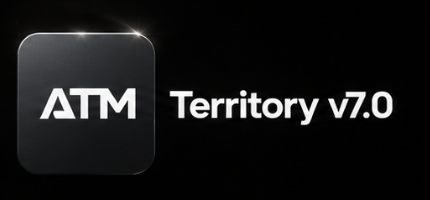

ATM · TERRITORY ECOSYSTEM
Tre strumenti.
Un unico flusso.
ATM Version 7 crea i territori, ATM Bridge li trasferisce e ATM Manager coordina persone, assegnazioni e attività.
Web app responsiveAccesso per ruoliSpace separati
IL MODELLO A GIRASOLE
Un centro operativo.
Tutto intorno, connesso.
ATM Manager è il fulcro. Ogni modulo è un petalo specializzato che condivide lo stesso flusso di lavoro.
ManagerCentro operativo
L’ECOSISTEMA COMPLETO
Dal disegno al trasferimento.
Tre prodotti, un solo flusso.
ATM Manager coordina il lavoro, ATM Version 7 crea i territori e ATM Bridge accompagna il trasferimento verso Territory Helper.
ATM WORKSPACE OPERATIVO
WORKSPACE OPERATIVO
ATM Manager
Il centro operativo dell’ecosistema: organizza Space indipendenti, persone, territori, richieste, assegnazioni, sicurezza e attività.
- Workspace separati e accesso basato sui ruoli
- Mappe, assegnazioni e registro operativo
- MFA, passkey, notifiche e interfaccia multilingua
ATM v7

MODULO CREATIVOATM Version 7
Trasforma un’area geografica in territori organizzati. Permette di generare perimetri, controllare il risultato ed esportare i dati pronti per il flusso operativo.
- Generazione e suddivisione dei territori
- Anteprima cartografica e controllo dei perimetri
- Esportazione GeoJSON per l’utilizzo successivo
ATM Bridge
ESTENSIONE FIREFOX
Bridge
ESTENSIONE FIREFOX
ATM Bridge
È il collegamento assistito tra ATM e Territory Helper. Rileva il file generato, mostra una conferma e guida l’utente verso l’importazione senza server intermedi.
- Rilevamento del GeoJSON generato
- Notifica e conferma prima del trasferimento
- Disponibile pubblicamente su Firefox Add-ons
01ATM v7Genera
→
02ATM BridgeTrasferisce
→
03ATM ManagerOrganizza e gestisce
TRE PRODOTTI, ESPLORATI DAVVERO
Ogni fase ha il suo strumento.
Ogni strumento ha uno scopo.
Non una raccolta di funzioni scollegate, ma un ecosistema progettato per accompagnare il territorio dalla prima linea sulla mappa fino alla gestione quotidiana.
01 / ATM MANAGER
Il centro operativo che mantiene tutto sotto controllo.
ATM Manager riunisce territori, persone e decisioni in uno Space isolato. Ogni membro vede soltanto ciò che gli compete, mentre amministratori e utenti avanzati governano il ciclo operativo senza perdere la cronologia.
01Space indipendentiDati, persone ed email separati per ogni organizzazione.
02Operazioni tracciabiliRichieste, assegnazioni, restituzioni e periodi di riposo.
03Sicurezza realeRuoli, MFA, passkey e audit log integrati nel flusso.
ATM MANAGER · LIVE SPACE
OVERVIEW
Territory operations.
TOTAL1,693AVAILABLE1,691ACTIVE02
ATM VERSION 7Dal concetto al territorio
02 / ATM VERSION 7
La parte creativa del sistema.
ATM Version 7 parte da un’area geografica e la trasforma in territori coerenti. La generazione non è una scatola nera: puoi osservare il risultato, verificare i perimetri e preparare un file pronto per il passaggio successivo.
- 01Definisci l’areaScegli il punto di partenza e il contesto cartografico.
- 02Genera e controllaVisualizza la suddivisione prima di proseguire.
- 03Esporta il risultatoOttieni il GeoJSON pronto per Bridge o Manager.
03 / ATM BRIDGE
Il passaggio assistito, senza passaggi oscuri.
ATM Bridge riconosce il GeoJSON creato da ATM, informa l’utente e prepara il trasferimento verso Territory Helper. Il controllo resta sempre visibile: nessuna azione parte senza conferma.
LOCAL
Progettato con un approccio essenziale alla privacy.Il file rimane nel browser durante il trasferimento e non passa attraverso server intermedi ATM.
ATMATM BridgeTerritory Helper connector
File rilevato e pronto per il controllo.
GEOATM_Territories.geojson12 territories · GeoJSON✓
PLATFORM
Progettato per il lavoro reale.
Territori vivi, non file statici
Importa KML o JSON, crea sezioni, modifica confini e consulta ogni area sulla mappa.
SCTerritorio assegnatoAttard 6 · 4 mesi✓
Assegnazioni complete
Richieste, approvazioni, ritiri, riposo automatico e cronologia in un solo registro.
USERADVANCEDADMIN
Il ruolo giusto, al momento giusto
Ogni persona vede soltanto gli strumenti e i dati necessari al proprio incarico.
Nato per lavorare oltre i confini
Preferenze linguistiche personali, email localizzate e Space isolati permettono a gruppi diversi di operare senza confusione.
ITENESFR日本語中文
DENTRO ATM MANAGER
Tutto il lavoro.
Un solo percorso.
Dalla creazione dello Space alla restituzione di un territorio: ogni schermata ha uno scopo preciso e ogni operazione resta collegata.
Panoramica
Mostra lo stato reale dello Space: territori totali, disponibili, assegnati, richieste e attività recenti.
Territori e mappa
Cerca un territorio, localizzalo sulla mappa, consulta il perimetro e apri la sua scheda completa.
ATM v7
Genera nuovi territori nel modulo creativo e preparali per il flusso operativo di ATM Manager.
Richieste e assegnazioni
Gli utenti richiedono un’area; amministratori e utenti avanzati la valutano, assegnano o ritirano.
Lavorazione e restituzione
Le strade da completare diventano visibili all’assegnatario. Alla restituzione si indica se il territorio è stato lavorato.
Riposo automatico
Un territorio completato riposa per un mese; un amministratore può intervenire quando necessario.
Persone e ruoli
Approva nuovi account e assegna responsabilità senza esporre dati appartenenti ad altri Space.
Notifiche e attività
Eventi importanti, email localizzate e registro cronologico mantengono il team aggiornato.
DAL PRIMO ACCESSO ALLA CONSEGNA
Un flusso leggibile, dall’inizio alla fine.
- 01Crea il tuo Space
Il primo responsabile configura uno spazio organizzativo isolato.
- 02Invita il team
Utenti e amministratori entrano attraverso un invito controllato.
- 03Organizza e assegna
Territori, sezioni e richieste rimangono sincronizzati.
- 04Completa e monitora
Restituzioni, periodi di riposo e attività restano tracciati.
SPACEMalta CentralSpazio isolato e protetto
SCProprietario dello SpaceCrea e invita
AMAmministratoreCoordina il lavoro
UTUtenteLavora sui territori assegnati
COME FUNZIONANO GLI SPACE
Ogni organizzazione resta nel proprio spazio.
Il responsabile crea uno Space e invita il proprio team. Persone, territori, notifiche ed email rimangono confinati in quello Space: le organizzazioni esterne non possono consultarsi a vicenda.
- Un’identità personale per ogni membro
- Approvazione controllata dei nuovi account
- Lingua e comunicazioni scelte individualmente
ACCESS CONTROL
Responsabilità chiare.
Utente
Consulta i propri territori, invia richieste e restituisce il lavoro.
Utente avanzato
Gestisce operazioni territoriali senza amministrare gli account.
Amministratore
Coordina persone, ruoli, territori, notifiche e attività del proprio Space.
Proprietario dello Space
Governa il ciclo di vita dello spazio e le operazioni più sensibili.
IDENTITY & ACCESS
Sicurezza incorporata nel flusso.
Approvazione degli account, isolamento per Space, controlli per ruolo, MFA, passkey e registro attività proteggono le operazioni quotidiane.
Contatta il supporto↗01Separazione degli SpaceACTIVE
02MFA e passkeyACTIVE
03Audit delle attivitàACTIVE
04Approvazione controllataACTIVE
WORKSPACE PRONTO
Il territorio è complesso.
Gestirlo non deve esserlo.
FAQ
Le risposte essenziali.
ATM Manager sostituisce ATM v7?
No. ATM v7 è il modulo creativo dedicato alla generazione; ATM Manager governa persone, territori e operazioni.
Gli utenti vedono subito le strade da lavorare?
No. Prima dell’approvazione possono localizzare il territorio, ma i dettagli operativi diventano disponibili soltanto dopo l’assegnazione.
Uno Space può vedere i dati di un altro?
No. Gli Space sono separati e le autorizzazioni limitano letture e operazioni al contesto dell’organizzazione.
Funziona su tablet e telefono?
Sì. L’interfaccia è responsive e adatta le funzioni principali alle dimensioni del dispositivo.
Come si richiede assistenza?
È disponibile un centro supporto dentro ATM Manager oppure puoi scrivere all’indirizzo ufficiale indicato in fondo alla pagina.